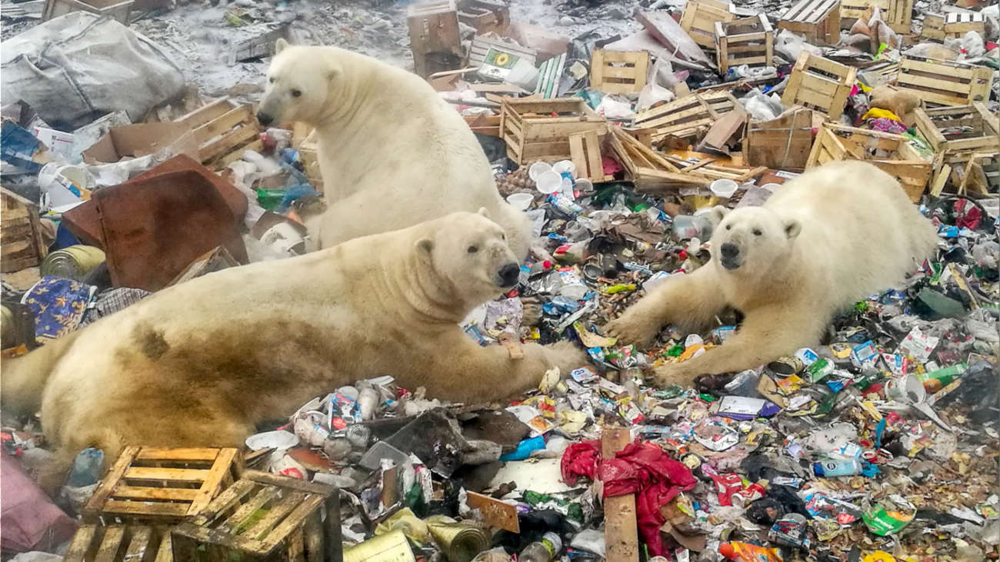
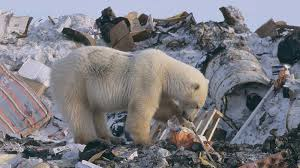
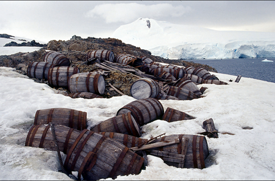
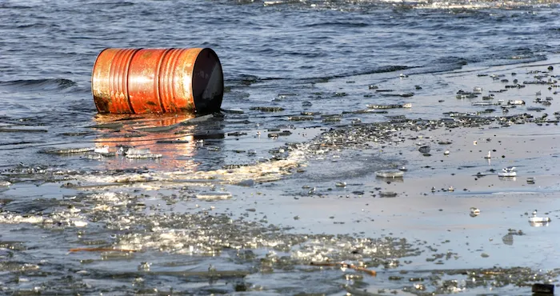
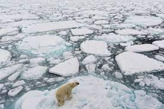
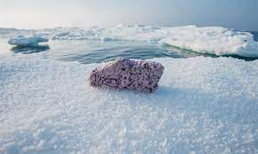

El cuidado de los osos polares es crucial para garantizar su supervivencia en un entorno cada vez más desafiante. Estos majestuosos depredadores del Ártico enfrentan amenazas significativas debido al cambio climático y la pérdida de hielo marino, su hábitat natural. Es esencial adoptar medidas para proteger a los osos polares y su entorno. Esto incluye la reducción de las emisiones de gases de efecto invernadero para frenar el cambio climático y conservar los extensos campos de hielo marino que son esenciales para su caza y descanso. Además, es crucial establecer regulaciones estrictas para la caza y la interacción humana, minimizando cualquier impacto negativo en la población de osos polares. La conciencia pública y la educación sobre la importancia de preservar estas especies también desempeñan un papel vital en su conservación, alentando prácticas sostenibles y el respeto por su hábitat único.
 Además de abordar el cambio climático y la protección del hábitat, es imperativo implementar programas de investigación que monitoreen de cerca la salud y el comportamiento de los osos polares. La recopilación de datos precisos sobre su población, reproducción y migración es esencial para desarrollar estrategias de conservación efectivas. Asimismo, se deben promover prácticas pesqueras sostenibles en las áreas circumpolares para asegurar la disponibilidad de presas naturales, como las focas, que constituyen una parte fundamental de la dieta de los osos polares. La gestión responsable de los desechos, tanto a nivel local como industrial, es otra medida esencial, ya que la contaminación puede tener efectos adversos en la fauna ártica. La colaboración internacional también juega un papel crucial, ya que los esfuerzos coordinados pueden aumentar la eficacia de las iniciativas de conservación y asegurar un futuro más seguro para los osos polares en nuestro planeta.
Junto con la investigación y la gestión de los hábitats, es vital establecer áreas protegidas que sirvan como refugios seguros para los osos polares. La creación y mantenimiento de zonas libres de disturbios humanos son esenciales para permitir que estos animales prosperen y se reproduzcan sin interferencias. Además, la educación continua de las comunidades locales y la promoción del turismo responsable son fundamentales para evitar impactos negativos en el comportamiento natural de los osos polares. La adopción de tecnologías innovadoras, como el monitoreo por satélite y dispositivos de rastreo, también puede brindar valiosa información sobre los patrones de movimiento y la salud individual de los osos, facilitando así una gestión más efectiva de la conservación. En última instancia, la conciencia global sobre la fragilidad de la vida silvestre ártica y la importancia de proteger a los osos polares es clave para inspirar acciones a nivel mundial.
 En conclusión, la preservación de los osos polares requiere un enfoque integral que aborde el cambio climático, proteja su hábitat, promueva prácticas de pesca sostenibles y gestione de manera efectiva la interacción humana. La investigación continua, la creación de áreas protegidas y el uso de tecnologías avanzadas son herramientas esenciales para respaldar los esfuerzos de conservación. Además, la colaboración internacional y la conciencia global son fundamentales para asegurar un futuro sostenible para los osos polares y mantener el equilibrio del ecosistema ártico. Solo mediante un compromiso colectivo y acciones concertadas podemos garantizar la supervivencia de estos magníficos animales en nuestro cambiante planeta.
 